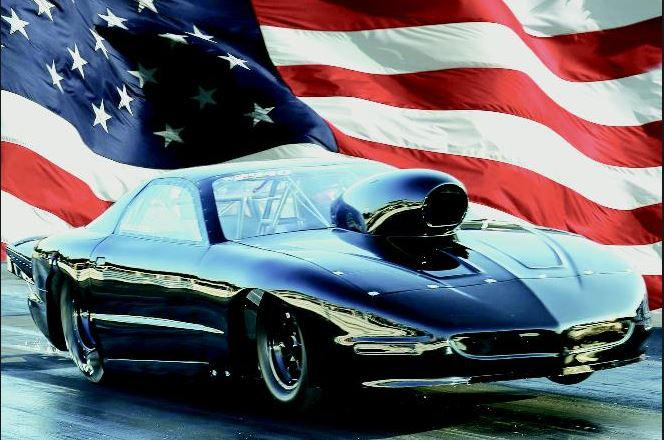
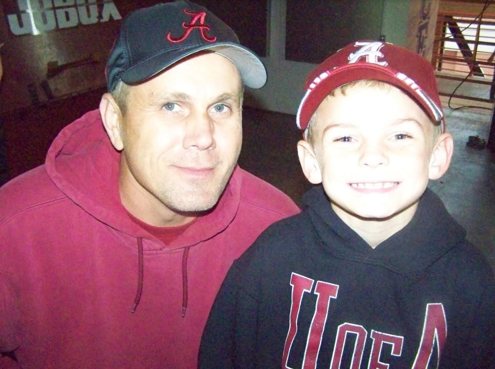

About Owner
Kelvin Brown is the proud owner of self made company. He also drag races in his spare time. His drag racing car is named Ruby.

Since the nature of the work involved in logging can be physically and mentally
demanding, Kelvin often hosts company Bar-B-Ques. Kelvin welcomes his employees
and their family members to have a day of food, drinks, and friendly conversation. These
outings have proven successful in boosting company morale. Kelvin is continually
looking for new and effective ways to increase employee satisfaction as well as ways to
maximize the company's success.
